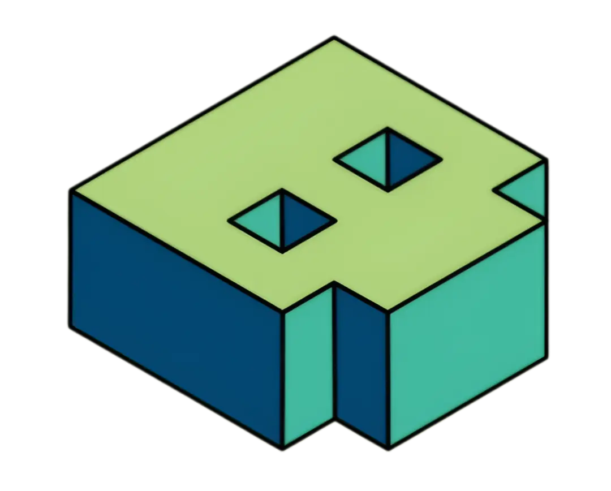

BinaryNbeyond
Fast, visual calculators for arithmetic, bitwise ops, and base conversions.
Simplifying scientific calculations for learners and developers.
Try: Arithmetic Calculations
New Interactive step-by-step animations • Keyboard friendly • Theme support
Number Conversions
Convert between binary, octal, decimal and hex with steps and examples.
Arithmetic
Add, subtract, multiply and divide with animated step reveal.
Bitwise Operations
Learn AND / OR / XOR with bit-level visualizations.